Lorsque vous commencerez à faire des programmes assez gros, vous aurez sûrement envie de créer un programme d'installation.
Jusqu'ici, vous donniez votre programme dans un fichier .zip qu'il fallait décompresser. Ok, ça va un peu, mais quand on veut faire un programme sérieux à distribuer, on aimerait bien pouvoir créer une installation professionnelle. C'est justement l'objet de ce cours :)
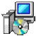
Ce cours vous montrera comment je crée un programme d'installation pour le jeu Mario Sokoban réalisé avec la bibliothèque SDL. Ce jeu a fait l'objet d'un TP dans la partie III du cours de programmation en C sur la bibliothèque SDL. Bien entendu, ce que je vous montre là sera adaptable pour n'importe quel type de programme, qu'il soit réalisé en C, en C++, en Java, en Python ou que sais-je encore ^^
En général, on ne code pas nous-mêmes le programme d'installation. Ce serait bien trop long, une vraie perte de temps. En plus, c'est assez compliqué car le programme d'installation doit combiner tous les fichiers du programme dans un seul gros .exe, et il doit les compresser aussi !
Cela fait que les programmes d'installation sont vraiment adaptés à une distribution sur Internet. Ils prennent le moins de place possible, et tous les fichiers du programme sont empaquetés dans le .exe de l'installation :)
Les outils de création d'installation
Il existe de nombreux outils permettant de créer une installation. Je ne vais pas vous faire une liste ici, mais citons quand même InstallShield (ce nom doit vous dire quelque chose). C'est un créateur d'installation payant très souvent utilisé.
Il existe aussi de nombreux outils gratuits. Il y a par exemple NullSoft Install System (NSIS) créé au départ pour le logiciel Winamp puis rendu gratuit à la disposition de tout le monde.
L'outil que je vais vous présenter ici est très connu et réputé. Son nom est Inno Setup. Il possède les avantages suivants :
Gratuit
Open Source
Très discret et professionnel : il n'affiche pas de message "Installation créée avec Bidule Truc".
Multilingue : il gère les installations dans différentes langues à la fois au besoin.
Très facile à utiliser : il y a un assistant.
Très personnalisable et puissant : on peut choisir de nombreuses options, de l'image affichée pendant l'installation aux clés de la base de registre à modifier, en passant par les raccourcis du menu démarrer.
En fait, ce qui est vraiment bien c'est que le programme n'affiche aucun message indiquant que l'installation a été créée avec Inno Setup. Il y a juste un petit commentaire (mais il faut aller le chercher !). Si vous faites un clic droit sur le .exe d'un programme d'installation, puis propriétés, onglet "Version", vous verrez le petit commentaire suivant :
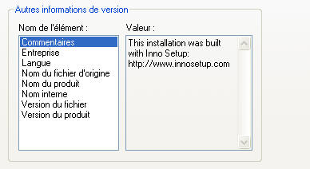
C'est donc ultra-discret (vos utilisateurs ne le verront probablement jamais). D'ailleurs j'ai un petit jeu à vous proposer : faites le test sur tous les programmes d'installation que vous avez sur votre disque dur. Comptez le nombre d'installations que vous avez qui ont utilisé Inno Setup : il y en a plein !
Cela devrait vous rassurer, car c'est un programme très utilisé qui ne manque pas de qualités :)
Télécharger Inno Setup
Rendez-vous sur le site officiel du logiciel. Cliquez sur le lien Download et récupérez le programme d'installation.
On vous demande en premier lieu votre langue. Normalement, la langue est automatiquement détectée en fonction de la langue utilisée sur votre ordinateur.
Vous voyez ensuite la première fenêtre de l'assistant d'installation :
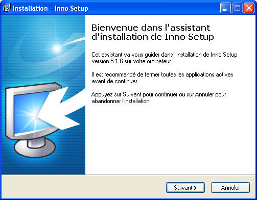
Sympathique n'est-ce pas ? :)
Bon je ne vous fais pas une capture d'écran de chacune des étapes de l'installation, je pense que vous êtes assez grands pour savoir cliquer sur Suivant - Suivant - Suivant - Terminer :p
A la fin, on vous demande si vous voulez exécuter Inno Setup. Bonne idée ça, on est justement là pour ça !
Lors du lancement d'Inno Setup, une fenêtre de bienvenue vous demande si vous voulez créer une nouvelle installation ou en ouvrir une déjà existante.
En fait, les installations d'Inno Setup se créent à partir d'un petit langage de script (très facile à utiliser je vous rassure). Comme l'auteur est sympa, il a pensé aux débutants qui veulent aller vite (comme nous :p ). Il a donc inclus un assistant de création de scripts. Cet assistant génèrera le script de création de l'installation pour nous. On ne demandait pas mieux :D
Cochez donc "Create a new script file using the Script Wizard" :
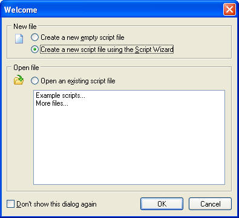
Cliquez sur OK. La première fenêtre d'assistant s'ouvre :
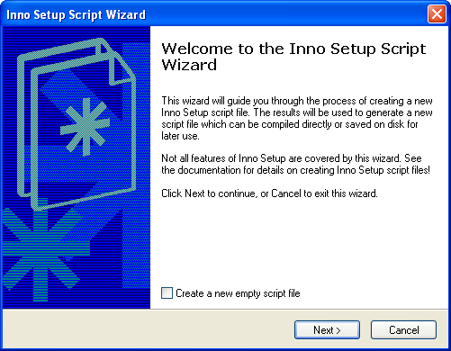
Bla bla bla. Ne cochez pas la case, cliquez sur Next, c'est tout ce que je vous demande :D
La fenêtre suivante est déjà plus intéressante :
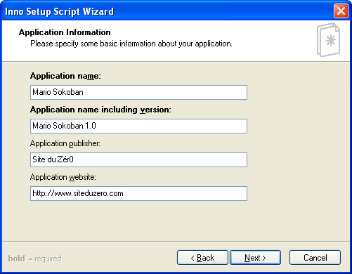
Vous devez rentrer le nom de votre programme, le nom de votre programme avec le numéro de version, le nom du créateur ainsi que le site web du programme. Dans mon exemple, je m'apprête à créer une installation pour le jeu Mario Sokoban.
Etape suivante :
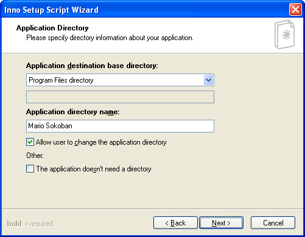
On vous demande le dossier d'installation du programme. Vous pouvez choisir entre le mettre dans Program Files ou dans un dossier personnalisé (custom). On va rester classiques, on va mettre le programme dans Program Files :)
Je vous conseille de laisser cocher la case "Allow user to change the application directory". Cela permettra à l'utilisateur de changer le chemin d'installation s'il le désire. L'autre case "The application doesn't need a directory" est un peu spéciale. Elle ne sert que pour de rares programmes qui n'ont pas besoin d'un dossier spécial pour être installés. Ca ne nous concerne pas ici.
Ensuite :
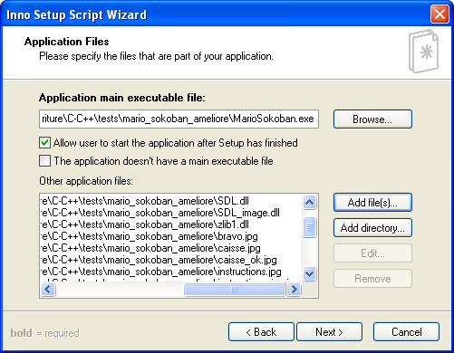
Cette fenêtre vous demande les fichiers à empaqueter. On vous demande tout en haut où se trouve l'exécutable (le .exe du programme). Indiquez donc où se trouve le fichier sur votre disque dur. Dans mon cas, il s'appelle MarioSokoban.exe
En-dessous, je vous conseille de laisser cochée la case comme moi : cette case permet de laisser la possibilité à l'utilisateur de démarrer le programme automatiquement à la fin de l'installation. La case "The application doesn't have a main executable file" ne sera généralement pas cochée. Elle ne sert que pour les programmes ne possédant pas de .exe principal. C'est assez rare, mais ça arrive ^^
Ensuite, et c'est très important là aussi, on vous demande les "Other application files". Vous devez indiquer là-dedans tous les fichiers dont a besoin votre programme pour fonctionner. Je vous conseille vivement de n'en oublier aucun, ou votre programme ne marchera pas :D
Je ne vous fais pas la liste, mais dans le cas du Mario Sokoban ça fait déjà pas mal de fichiers ! Entre les DLL de la SDL et de SDL_Image, les images du jeu, le fichier niveaux.lvl etc... Ca en fait du monde !
Si vous voulez ajouter des fichiers qui seront installés dans le même dossier que l'exécutable, cliquez sur Add Files
Si vous voulez ajouter tout un répertoire pour qu'il soit recréé dans le dossier de l'exécutable, cliquez sur Add Directory
Dans mon cas, je n'ai pas eu besoin d'ajouter de répertoire, tous les fichiers se trouvent dans le même dossier que l'exécutable. Dans le cas de très gros programmes, vous aurez sûrement besoin de créer des dossiers (un pour les images, un pour les sons, un pour les niveaux...). Vous cliquerez alors sur Add Directory.
Fenêtre suivante :
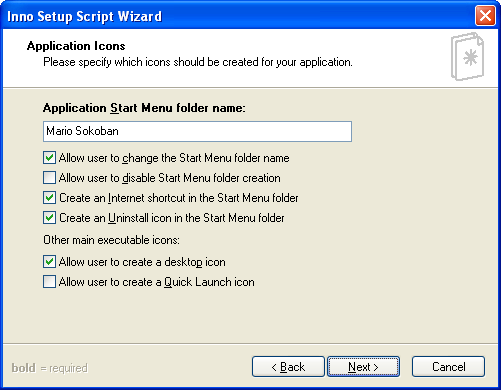
On vous demande quels raccourcis vous voulez créer. En premier lieu, on vous demande le nom du dossier dans le menu démarrer. Personnellement, je laisse la valeur par défaut.
Les cases à cocher sont intéressantes, je traduis pour les non-anglophones :
Allow user to change Start Menu folder name : laisse la possibilité à l'utilisateur de changer le nom du dossier du menu démarrer.
Allow user to disable Start Menu folder creation : laisse la possibilité à l'utilisateur de désactiver la création des raccourcis dans le menu démarrer.
Create an Internet Shortcut in the Start Menu folder : un lien vers votre site web sera ajouté au Menu Démarrer (chic chic :D )
Create an Uninstall icon in the Start Menu folder : ajoute une icône de désinstallation dans le menu démarrer.
Allow user to create a desktop icon : laisse la possibilité à l'utilisateur de créer un raccourci sur le bureau.
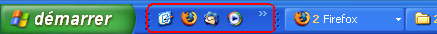
Allow user to create a Quick Launch icon : laisse la possibilité à l'utilisateur de créer un raccourci dans la barre Quick Launch. C'est une barre de raccourcis située juste à droite du menu Démarrer. Vous pouvez voir la zone en question sur ma capture d'écran :
Fenêtre suivante (allez c'est presque fini !) :
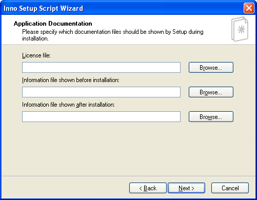
On vous y demande des fichiers texte à afficher avant et après l'installation (ainsi que la license du programme). Vous pouvez indiquer n'importe quel fichier .txt (ou .rtf si vous voulez faire un peu de mise en forme comme mettre de la couleur, du gras...).
Personnellement, je ne mets rien ici pour mon programme, mais vous aurez sûrement envie d'afficher des informations à vos utilisateurs. Par exemple, vous pourriez indiquer les bugs connus de votre programme, les améliorations apportées par la nouvelle version etc.
La partie "License File" sera utile notamment si vous distribuez votre programme sous license libre (GNU / GPL) comme ça se fait le plus souvent pour les programmes Open Source (c'est-à-dire les programmes dont on peut obtenir le code source).
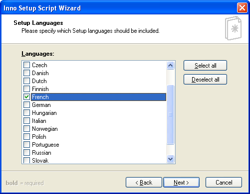
Ici, on vous demande les langues disponibles dans le programme d'installation. Si vous cochez plusieurs langues, on demandera la langue désirée au début de l'installation. Dans mon cas, je vais cocher seulement French (na ! :p ).
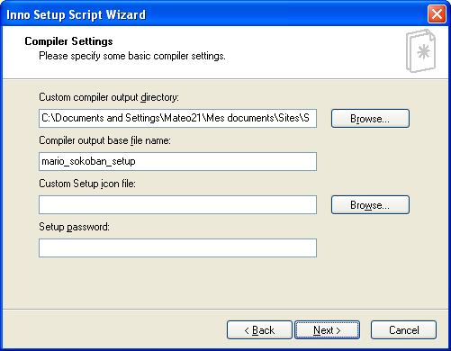
Le premier champ permet d'indiquer dans quel dossier devra être créé le programme d'installation. Personnellement, j'ai choisi de le mettre dans le dossier de mon projet pour l'avoir facilement sous la main.
Ensuite, on vous demande le nom du programme d'installation. Je recommande de changer le "setup" par défaut par quelque chose de plus clair, comme ici : "mario_sokoban_setup".
Le troisième champ permet de choisir un fichier d'icône (.ico) personnalisé pour l'installation. Je vais laisser l'icône par défaut, elle est très bien :p
Enfin, le 4ème champ permet de protéger l'installation par mot de passe. Seuls ceux qui connaissent le mot de passe pourront installer votre programme.
La fenêtre suivante est la dernière : vous n'avez plus qu'à cliquer sur Finish !
Compiler l'installation
Vous pouvez voir que le script de configuration de l'exécutable a été automatiquement généré par l'assistant en fond. On vous demande si vous voulez compiler l'installation maintenant. Si vous ne voulez pas personnaliser encore un peu le script à la main, cliquez sur Oui :
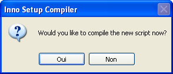
Au bout de quelques secondes, le programme d'installation a été généré !
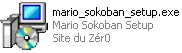
Et voilà un beau programme d'installation tout neuf !
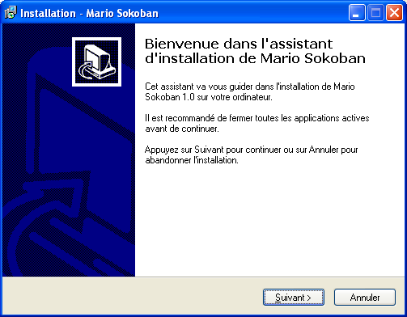
Modifier le script de configuration
Si vous voulez modifier le script de configuration, libre à vous. Vous trouverez de la documentation dans l'aide d'Inno Setup. C'est vraiment simple à utiliser, vous aurez vite fait d'apprendre :)
En modifiant le script de configuration, vous pourrez faire des choses plus avancées, comme afficher une image personnalisée pendant l'installation du programme, redémarrer l'ordinateur à la fin de l'installation ou encore modifier des clés de la base de registre. Pour compiler à nouveau l'installation, vous irez dans le menu Build / Compile (Ctrl + F9).
Pour information, j'ai eu besoin de modifier un tout petit peu le script de configuration pour mon jeu Mario Sokoban. En effet, il faut préciser le répertoire de travail (WorkingDir) dans la ligne commandant la création du raccourci dans le menu démarrer :
J'ai juste rajouté WorkingDir: "{app}" pour indiquer que le "répertoire de travail" du programme était celui de l'application {app}. Si je ne l'avais pas fait, le programme n'aurait pas su où aller chercher les images par exemple.
Créer un programme d'installation professionnel est donc un jeu d'enfant avec Inno Setup grâce à l'assistant. Cet assistant est vraiment pratique car il suffit la plupart du temps pour créer une installation rapidement.
Toutefois, il ne vous montre même pas le quart des possibilités d'Inno Setup ! Si vous voulez aller plus loin, il faudra éditer vous-même le fichier de configuration de l'installation. N'hésitez pas à consulter l'aide, car l'installation est très personnalisable et vous pouvez faire de nombreuses choses en éditant le fichier de configuration !